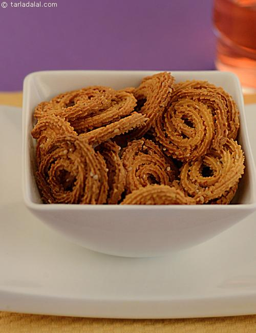

Badaam Ka Sheera | How many times have you dismissed the thought of making your favourite Indian desserts at home because they take too long to prepare? Well, where there is a will, there is a way. Next time you feel like relishing some delicious Badam ka Sheera, try this quick and easy recipe, which enables you to make this fabulous saffron-tinged, rich almond sheera in minutes! |
|
Baked Chaklis|  | This simple and delicious recipe is a real treat for weight watchers. Chaklis, the popular indian snack, is usually deep-fried and contains loads of calories. Here's how to make them with 1 tsp of oil to near perfection by baking them in an oven. Munch them at anytime of the day when hunger strikes. |
|
Baby Corn Sticks | Crunchy and tasty, these perfectly golden-coloured Baby Corn Fritters are a sight to behold and a treat to bite into! It is also quite easy to prepare, because the procedure does not require it to be marinated. Just mix, dip and fry – it’s as easy as that. Kids will love to have it as an After School Treats. |
|
Cheesy Tangy Dip | When you need a dip in a jiffy, look no further! A simple mix-and-serve job, the Cheesy Pepper Dip is a great combo for cream crackers and vegetable strips and is sure to be liked by all. Kids will love the cheesy feel, while adults will enjoy the peppery tinge. |
|
Watermelon Feta Cheese Salad | Watermelon and cheese are an evergreen combo. Just two slices of watermelon salad with a slice of cheese makes a lovely snack, which everybody loves to enjoy when watermelons are in season.This Feta and watermelon salad is a more exotic and filling snack, which makes use of this all-time favourite combo. |
| Cold Herb Salad | This cold salad makes a beautiful dish on a lunch buffet table. Cooked fusilli is tossed in with broccoli, asparagus and lettuce. Top it up with cherry tomatoes and a thick cream-curd dressing for a soft’n’crunchy salad. |
|